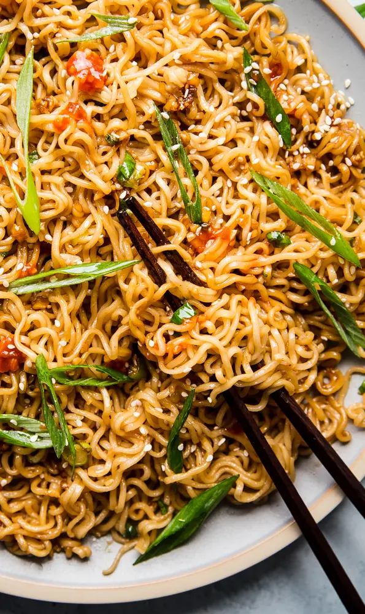

Fast and Easy Sesame Garlic Ramen Noodles

Why should I make this dish?
Ever come home from a long day at work and all you want is some nice, quick comfort food?
How would you like to turn one of your favorite meals from college into a tasteful, delicious dish (with leftovers too)?
Keep on reading if you're interested and prepare to be amazed.
Ingredients
- 3 (3 oz) packages: instant ramen noodles, flavor packets discarded
- 1/4 cup: low sodium soy sauce
- 1/4 cup: oyster sauce or hoisin sauce if vegetarian
- 1 tbsp: rice vinegar
- 1/2 - 1 tsp: chili sauce like sambal or sriracha
- 1/4 cup: water
- 2 tbsp: toasted sesame oil
- 4: cloves garlic, minced about 2 tsp
- 1 tsp: freshly grated ginger
- 4-6: green onions, thinly sliced
- 1 tsp: sesame seeds
Steps
- In a large pot of boiling water, cook ramen according to package, about 3-4 minutes; drain well.
- In a small bowl, whisk together soy sauce, oyster sauce, rice vinegar, brown sugar, chili sauce and water.
- Heat sesame oil in a large skillet set over medium heat.
- Stir in garlic and ginger until fragrant, about 1 minute.
- Pour in the bowl of sauce and simmer for 3-4 minutes. Stir in cooked ramen noodles until heated through and evenly coated in sauce, about 3 minutes.
- Garnish with green onions and sesame seeds.
This recipe was courtesy of...The Modern Proper
Back to top
Back to home